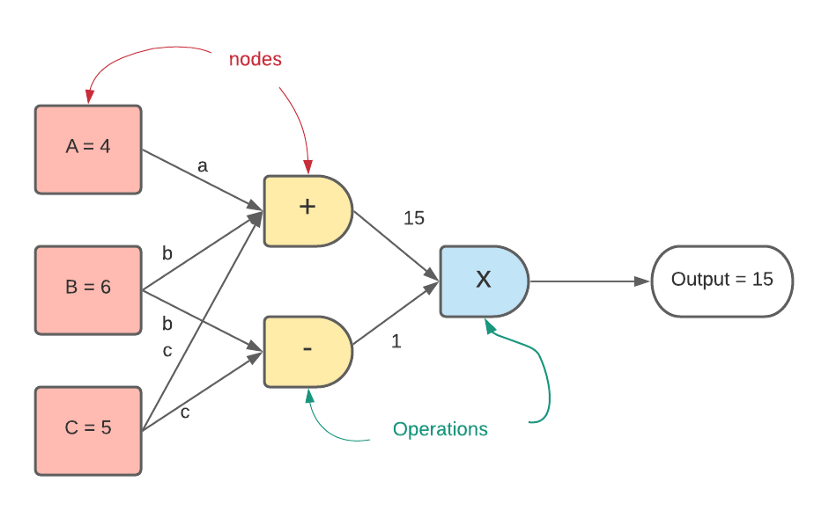
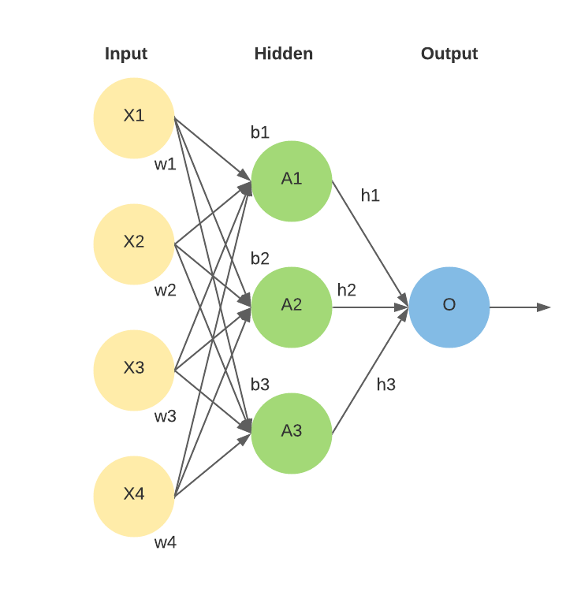

- Computational Graph
- Computational Graph::Define and Run
- Computational Graph::Define by Run(Dynamic Computational Graph, DCG)
- 자동 미분(Autograd)
- numpy.ndarray.view vs numpy.ndarray.reshape
- Torch.mm vs Torch.matmul 차이점
- torch.tensor의 requires_grad param의 기능
- torch.nn.Module
- torch.nn.Parameter
- optimizer.zero_grad()
- PyTorch 딥러닝 학습의 기본 순서
- collate_fn(parameter of torch.utils.data.DataLoader)
- Top 10 Performance Tuning practices
- Transfer Learning
- Metric(in machine learning)
- Cross Entropy Loss
- BCELoss(Binary Cross Entroby Loss)
- ML Monitoring tools for pytorch
- pin_memory = True(parameter of torch.data.DataLoader)
- torch.no_gard()
Computational Graph
- 연산의 과정을 그래프로 표현

- 모든 신경망은 계산 그래프이다

Computational Graph::Define and Run
- 그래프를 먼저 정의, 실행 시점에 데이터를 feed
Computational Graph::Define by Run(Dynamic Computational Graph, DCG)
- 실행하면서 그래프 생성
자동 미분(Autograd)
점프 투 파이썬
점프 투 파이썬 오프라인 책(개정판) 출간 !
https://wikidocs.net/60754
A Gentle Introduction to torch.autograd - PyTorch Tutorials 1.12.1+cu102 documentation
- 역전파를 위한 자동 미분기능
numpy.ndarray.view vs numpy.ndarray.reshape
What's the difference between reshape and view in pytorch?
view() will try to change the shape of the tensor while keeping the underlying data allocation the same, thus data will be shared between the two tensors.
https://stackoverflow.com/questions/49643225/whats-the-difference-between-reshape-and-view-in-pytorch
-
view는 항상 같은 메모리임을 보장, reshape의 경우 항상 같은 메모리임을 보장하지 않음
-
view는 contiguity를 보장하지만 reshape는 보장하지 않음
Returns a tensor with the same data and number of elements as input, but with the specified shape. When possible, the returned tensor will be a view of input. Otherwise, it will be a copy. Contiguous inputs and inputs with compatible strides can be reshaped without copying, but you should not depend on the copying vs. viewing behavior.
-
Torch.mm vs Torch.matmul 차이점
Torch.mm과 Torch.matmul 차이점
vector 및 matrix 간의 다양한 곱을 수행한다.
https://neos518.tistory.com/178
torch.tensor의 requires_grad param의 기능
-
requires_grad = True일 경우, 해당 tensor는 model이 backward 될 때 자동미분(auto grad)된다.
torch.nn.Module
-
ai 모델을 구성하는 layer의 base class
-
input, output, forward, backward를 정의해야 함
-
학습 대상이 되는 parameter(tensor)를 정의해야 함
torch.nn.Parameter
- Tensor를 상속받는 Class
- nn.Moudule 내에 Attribute가 될 때, required_grad=True로 지정되어 자동으로 학습대상이 됨
-
= AutoGrad의 대상이 됨
-
optimizer.zero_grad()
torch.optim.Optimizer.zero_grad - PyTorch 1.12 documentation
Sets the gradients of all optimized s to zero.
https://pytorch.org/docs/stable/generated/torch.optim.Optimizer.zero_grad.html?highlight=optimizer%20zero_grad#torch.optim.Optimizer.zero_grad
optimizer.zero_grad()-
호출 시 parameter(학습해야 할 tensor)의 grad 변수를 초기화
-
backward()를 호출할 시, 내부 Parameter Tensor의 grad에는 편미분한 결과 값이 저장됨
-
그러나 역전파가 끝난 후에도 유지되므로, 다음 훈련 전에 초기화 필요
-
PyTorch 딥러닝 학습의 기본 순서
# Optimize 대상인 각 parameter들의 gradient 값 초기화
optimizer.zero_grad()
# 예측값 계산
output = model(inputs) #
# Ground_truth와 예측 값 사이의 loss 계산
loss = loss_function(output, ground_truth)
# loss 값으로 각 parameter의 gradient 값 계산
loss.backward()
# gradient 값으로 각 parameter 갱신
optimizer.step()collate_fn(parameter of torch.utils.data.DataLoader)
torch.utils.data - PyTorch 1.12 documentation
The most important argument of constructor is , which indicates a dataset object to load data from.
https://pytorch.org/docs/stable/data.html#dataloader-collate-fn
Top 10 Performance Tuning practices
Top 10 Performance Tuning Practices for Pytorch
Pytorch 모델의 학습 및 추론을 가속화 할 수 있는 10가지 팁을 공유드립니다.
https://medium.com/naver-shopping-dev/top-10-performance-tuning-practices-for-pytorch-e6c510152f76
Transfer Learning
Transfer learning - Wikipedia
Transfer learning (TL) is a research problem in machine learning (ML) that focuses on storing knowledge gained while solving one problem and applying it to a different but related problem.
https://en.wikipedia.org/wiki/Transfer_learning
전이학습
전이학습은 하나의 작업을 위해 훈련된 모델을 유사 작업 수행 모델의 시작점으로 활용하는 딥러닝 접근법입니다.
https://kr.mathworks.com/discovery/transfer-learning.html
-
하나의 문제를 풀 때 얻은 지식을 관련있는 다른 문제를 풀 때 적용하는 것
-
이미 훈련된 모델을 유사 작업 수행 모델의 시작점으로 활용하는 딥러닝 접근법
Metric(in machine learning)
Metrics in Machine Learning
false positives in a classification model.
https://machine-learning.paperspace.com/wiki/metrics-in-machine-learning
Metric - Wikipedia
Metric or metrical may refer to: Metric system, an internationally adopted decimal system of measurement In mathematics, metric may refer to one of two related, but distinct concepts: A function which measures distance between two points in a metric space A metric tensor, in differential geometry, which allows defining lengths
https://en.wikipedia.org/wiki/Metric
-
머신러닝에서의 메트릭(metric)은 머신러닝 시스템의 최적화를 위해 우리가 관심을 갖는 숫자를 의미
-
Accuracy, Loss, Confusion Matrix, AUC, MAE, RMSE, … etc
-
Cross Entropy Loss
크로스 엔트로피 손실: 개요
파이토치 및 텐서플로의 코드와 대화형 시각화를 포함한 크로스 엔트로피 손실을 다루는 튜토리얼.
https://wandb.ai/wandb_fc/korean/reports/---VmlldzoxNDI4NDUx
-
주로 분류 모델이 얼마나 잘 분류했는가를 측정하는데 사용하는 metric
-
loss(error)는 0에서 1 사이로 측정됨( 0일 시, 완벽한 모델)
BCELoss(Binary Cross Entroby Loss)
BCELoss - PyTorch 1.12 documentation
Join the PyTorch developer community to contribute, learn, and get your questions answered.
https://pytorch.org/docs/stable/generated/torch.nn.BCELoss.html
- 결과 값이 두개뿐인 시나리오에서 사용됨
-
p : 예측 확률
-
y : 지표(BCE의 경우 0 또는 1)
-
t : n개의 class중 임의의 class의 index
ML Monitoring tools for pytorch
- Tensorboard
TensorBoard | TensorFlow
텐서보드는 머신러닝 실험에 필요한 시각화 및 도구를 제공합니다.
https://www.tensorflow.org/tensorboard?hl=ko
- WandB
Machine Learning Articles, Tutorials & Reports by Weights & Biases
Fully Connected: Where leading machine learning practitioners discover and share news, papers, findings and reports.
https://wandb.ai/fully-connected
pin_memory = True(parameter of torch.data.DataLoader)
When to set pin_memory to true?
From the imagenet example: train_loader = torch.
https://discuss.pytorch.org/t/when-to-set-pin-memory-to-true/19723
How to Optimize Data Transfers in CUDA C/C++ | NVIDIA Technical Blog
In the previous three posts of this CUDA C & C++ series we laid the groundwork for the major thrust of the series: how to optimize CUDA C/C++ code.
https://developer.nvidia.com/blog/how-optimize-data-transfers-cuda-cc/
-
CPU로 dataset을 로드하고, 학습 시간에 이를 GPU로 push 한다면 위 옵션을 통해 host 에서 device(GPU)로 전송하는 속도를 향상시킬 수 있음
torch.no_gard()
no_grad - PyTorch 1.12 documentation
Join the PyTorch developer community to contribute, learn, and get your questions answered.
https://pytorch.org/docs/stable/generated/torch.no_grad.html
- backward를 사용하지 않을 때(inference 시점) 메모리 소비를 줄임
- 모델 내 tensor 중 requred_grad = True인 경우에도 required_grad=False처리하여 계산